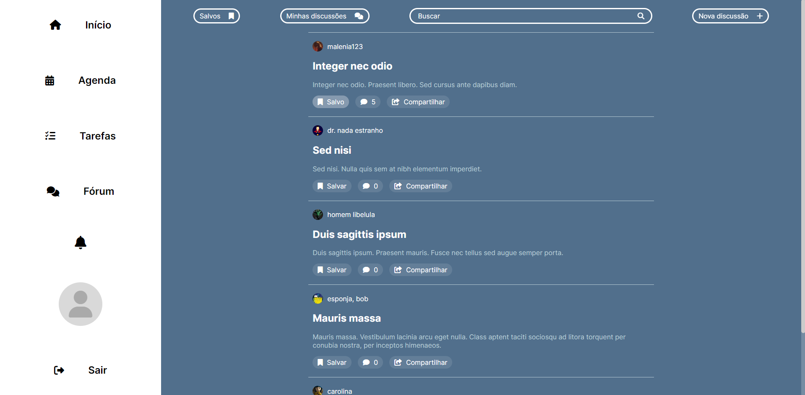

Introdução
Informações básicas do projeto como nome e membros da equipe.
Informações Gerais
- Projeto: Trackle
- Repositório GitHub: Repositório
- Membros da equipe:
Contexto
Detalhes sobre o espaço de problema, justificativas e os objetivos do projeto.
Problema
A dificuldade de ser produtivo, um problema que surge por diversos motivos, como a quantidade, complexidade e duração dos afazeres, a situação do ambiente onde são realizados, os distratores, transtornos psicológicos, desmotivação, procrastinação e dificuldade em se organizar. A dor se intensifica ao levar em consideração as consequências, que são relacionadas com as causas. A frustração, desmotivação, estresse e ansiedade são alguns deles, sobrecarregando quem sofre com a dor e piorando o desempenho. Por terem relação para além das obrigações, o problema e a solução fazem parte do dia a dia do usuário. Este pode enfrentar sua dor no trabalho, escola, ou própria casa. Por vezes, ele a remoi em locais ou situações em que ela não deveria vir à tona. Portanto, a solução, estando presente em seus dispositivos de uso pessoal, será de fácil acesso e útil sempre que o usuário julgar necessário utilizá-la.
Objetivos
O objetivo geral do projeto é desenvolver uma aplicação que solucione a dificuldade de ser produtivo. Para tal, ela auxiliará o usuário a organizar uma rotina diante das tarefas e a disponibilidade para realizá-las. Esse objetivo será alcançado a partir de funcionalidades que auxiliarão o usuário na criação ou aprimoramento de uma rotina, como registro das tarefas e suas características, priorização, acompanhamento do progresso e distribuição destas em um calendário interativo. A aplicação também usará o conceito de gamificação para motivar o usuário, a partir de funcionalidades como desafios e recompensas.
Justificativa
A necessidade de uma aplicação que melhore a produtividade é evidente na atualidade. Em um mundo pós-pandêmico, onde a tecnologia está cada vez mais presente, a nossa atenção é cada vez mais dividida pelas redes sociais e há um bombardeio de conteúdo de curta duração, alguns problemas e necessidades começaram a surgir. Consequências como ansiedade, estresse, burnout e problemas de concentração estão cada vez mais presentes, diretamente relacionados com obrigações como trabalho e estudo. Não só por causa das redes sociais, mas por causa da característica apressada do mundo em si. Ser capaz de acompanhar o ritmo, sem se deixar levar pelas diversas distrações e se manter fisicamente e mentalmente saudável não é uma tarefa fácil. A motivação da aplicação gira em torno dessa situação. Deve haver uma forma de auxiliar o usuário a realizar seus afazeres com sucesso, de uma forma constante e que se encaixe nas necessidades dele. A aplicação fará uso da própria tecnologia para auxiliar o usuário, com interfaces úteis e amigáveis para criar uma rotina e organizar as tarefas com facilidade, potencializando a produtividade e o atingimento dos seus objetivos.
Público-alvo
As pessoas que usarão a aplicação são aqueles que sentem a necessidade de serem produtivos, principalmente estudantes e trabalhadores, com faixa etária entre 18 e 50 anos, que já possuem certa afinidade com a tecnologia para usar a aplicação, porém possuem algum obstáculo que dificulta a realização de suas atividades com eficiência.
Um estudante que também é estagiário, por exemplo. Possui diversas obrigações, e muito pouco tempo durante a semana para se organizar ou fazer suas tarefas. Ele considera importante estar ciente de todas as suas pendências, e precisa organizar sua rotina para ter tempo de finalizá-las. Ou então um trabalhador remoto que sofre de déficit de atenção. Conseguir segmentar suas tarefas para ter um melhor acompanhamento, se manter focado, e encontrar discussões úteis com outros usuários são medidas de importância para ele.
Que tal um digital influencer, que além de gerenciar suas redes sociais e postar conteúdo constantemente na internet, gosta de praticar exercícios físicos, definindo metas para continuar se exercitando. Uma agenda para visualizar com clareza suas próximas atividades acaba se tornando muito útil. E algum recurso de gamificação, como conquistas ou nível de experiência, podem contribuir para mantê-lo motivado a seguir sua rotina na aplicação.
Concepção (Design Thinking)
Detalhes do processo de discovery do projeto.
Apresente o processo de discovery do projeto. Com foco na experiência do usuário, esse processo abrange a compreensão do contexto do problema e das características do usuário, a definição do problema, a geração de ideias, a prototipagem e a elaboração de uma proposta de solução
Processo de Design Thinking
O arquivo que se segue apresenta o resultado desse processo.
Apresente o processo de Design Thinking realizado pelo grupo e documentado por meio do software Miro. No documento apresentado, devem ser incluídos: (1) a matriz CSD, (2) o mapa de stakeholders, (3) as personas, (4) as respectivas propostas de valor e (5) o processo de ideação identificando as ideias levantadas e sua priorização.
Especificações do Projeto
Documentação das especificações do projeto.
Apresente as especificações do projeto, incluindo as histórias de usuário e os requisitos funcionais e não funcionais.
Histórias de Usuários
Com base na análise das personas foram identificadas as seguintes histórias de usuários:
Apresente aqui as histórias de usuário que são relevantes para o projeto de sua solução. As Histórias de Usuário consistem em uma ferramenta poderosa para a compreensão e elicitação dos requisitos funcionais e não funcionais da sua aplicação. Se possível, agrupe as histórias de usuário por contexto, para facilitar consultas recorrentes à essa parte do documento.
EU COMO...PERSONA |
QUERO/PRECISO...FUNCIONALIDADE |
PARA...MOTIVO/VALOR |
|---|---|---|
| Usuário do sistema | Registrar minhas tarefas | Não esquecer de fazê-las |
| Usuário do sistema | Acompanhar o progresso das minhas tarefas | Definir meu próximo passo |
| Usuário do sistema | Priorizar tarefas | Ficar mais atento para urgências |
| Usuário do sistema | Ver minha agenda | Me antecipar para as futuras tarefas |
| Usuário do sistema | Trocar experiências e conhecimentos com outros usuários | Aprender mais sobre como devo me organizar |
| Usuário do sistema | Receber sugestões de mudanças na minha rotina | Experimentar uma estratégia nova |
| Usuário do sistema | Ter desafios e recompensas | Continuar motivado |
| Usuário do sistema | Ser notificado | Acompanhar minha rotina |
| Usuário do sistema | Acompanhar meu progresso das tarefas atuais | Avaliar o que funciona e o que não funciona para mim |
| Usuário do sistema | Personalizar meu perfil | Ter minha identidade e me sentir parte do processo |
| Usuário do sistema | Ter meus dados salvos entre dispositivos | Ter acesso à minha rotina de qualquer lugar |
Requisitos
As tabelas que se seguem apresentam os requisitos funcionais e não funcionais que detalham o escopo do projeto.
Com base nas Histórias de Usuário, enumere os requisitos da sua solução. Classifique esses requisitos em dois grupos:
- Requisitos Funcionais (RF): correspondem a uma funcionalidade que deve estar presente na plataforma (ex: cadastro de usuário).
- Requisitos Não Funcionais (RNF): correspondem a uma característica técnica, seja de usabilidade, desempenho, confiabilidade, segurança ou outro (ex: suporte a dispositivos iOS e Android).
Lembre-se que cada requisito deve corresponder à uma e somente uma característica alvo da sua solução. Além disso, certifique-se de que todos os aspectos capturados nas Histórias de Usuário foram cobertos.
Requisitos Funcionais
| ID | Descrição do Requisito | Prioridade |
|---|---|---|
| RF-001 | Cadastro de usuário | ALTA |
| RF-002 | Login do usuário | ALTA |
| RF-003 | Permitir que o usuário cadastre tarefas | ALTA |
| RF-004 | Permitir que o usuário edite tarefas | ALTA |
| RF-005 | Permitir que o usuário exclua tarefas | ALTA |
| RF-006 | Permitir que o usuário defina a prioridade de uma tarefa | ALTA |
| RF-007 | Listar as tarefas pendentes próximas | ALTA |
| RF-008 | Exibir as tarefas em um calendário | ALTA |
| RF-009 | Exibir gráficos da progressão das tarefas | MÉDIA |
| RF-010 | Exibir perguntas de sim ou não sobre a rotina do usuário | MÉDIA |
| RF-011 | Sugerir mudanças na rotina | ALTA |
| RF-012 | Criação de discussões abertas à outros usuários | ALTA |
| RF-013 | Comentar em uma discussão | ALTA |
| RF-014 | Salvar uma discussão | BAIXA |
| RF-015 | Avaliar comentários da discussão | BAIXA |
| RF-016 | Notificações | MÉDIA |
| RF-017 | Conquistas ao concluir desafios | BAIXA |
| RF-018 | Nível de perfil | BAIXA |
| RF-019 | Alterar nome de perfil | BAIXA |
| RF-020 | Adicionar sessão "sobre mim" no perfil | BAIXA |
| RF-021 | Personalizar banner de perfil | BAIXA |
| RF-022 | Alterar senha da conta | MÉDIA |
Requisitos Não-Funcionais
| ID | Descrição do Requisito | Prioridade |
|---|---|---|
| RNF-001 | A aplicação deve ser responsiva para rodar em diferentes resoluções | ALTA |
| RNF-002 | A aplicação deve ser compatível com os navegadores Google Chrome, Safari, Microsoft Edge, Firefox e Opera | BAIXA |
| RNF-003 | Deve ser implementado um sistema de autenticação seguro | MÉDIA |
| RNF-004 | A aplicação deve favorecer uma disponibilidade do serviço de 95,45% | ALTA |
| RNF-005 | A aplicação deve minizar o tempo de carregamentos | ALTA |
| RNF-006 | Deve ser possível ajustar a infraestrutura de nuvem conforme necessário | MÉDIA |
| RNF-007 | A aplicação deve estar em conformidade com a LGPD | ALTA |
Projeto de Interface
Artefatos relacionados com a interface e a interacão do usuário na proposta de solução.
Apresente a ideia de interface que está sendo prevista para o projeto. Inclua os wireframes, o user/screen flow e o protótipo interativo.
User/Screen Flow e Protótipo interativo
Artefatos relacionados com a interface e a interacão do usuário na solução proposta.
O fluxo de usuário (User Flow) é uma técnica que permite ao desenvolvedor mapear todo fluxo de
telas do site ou app. Essa técnica funciona para alinhar os caminhos e as possíveis ações que o
usuário pode fazer junto com os membros de sua equipe. 
Um protótipo interativo apresenta o projeto de interfaces e permite ao usuário navegar pelas
funcionalidades como se estivesse lidando com o software pronto. Veja o exemplo a seguir.
Wireframes
Protótipo de telas do sistema em baixa fidelidade (rascunhos).
Os Wireframes são protótipos das telas da aplicação usados em design de interface para sugerir a
estrutura de um site web e seu relacionamentos entre suas páginas. Um wireframe web é uma ilustração
semelhante ao layout de elementos fundamentais na interface. 

Metodologia
Detalhes sobre a organização do grupo e o ferramental empregado.
Nesta parte do documento, você deve apresentar a metodologia adotada pelo grupo, descrevendo o processo de trabalho baseado nas metodologias ágeis, a divisão de papéis e tarefas, as ferramentas empregadas e como foi realizada agestão de configuração do projeto via GitHub.
Coloque detalhes sobre o processo de Design Thinking e a implementação do Framework Scrum seguido pelo grupo. O grupo poderá fazer uso de ferramentas on-line para acompanhar o andamento do projeto, a execução das tarefas e o status de desenvolvimento da solução.
Ferramentas
Relação de ferramentas empregadas pelo grupo durante o projeto.
Liste as ferramentas empregadas no desenvolvimento do projeto, justificando a escolha delas, sempre que possível. Inclua itens como: (1) Editor de código, ferramentas de comunicação, ferramentas de diagramação, plataformas de hospedagem, entre outras.
Gestão do Projeto
Divisão de papéis no grupo e apresentação da estrutura da ferramenta de controle de tarefas (Kanban).
Apresente a divisão de papéis e tarefas entre os membros do grupo. Informe quem é o Scrum Master, o Product Owner e os desenvolvedores. Informe também quem é o responsável pela documentação do projeto.
Apresente o quadro de gerenciamento do time (Kanban), seu formato e as experiências na utilização dessa ferramenta (GitHub Projects)
| Membro | Responsabilidades |
|---|---|
| Henrique Santos | Documentação; Wireframes; |
| Henrique Boson | User flow; Documentação; |
| Ian | Wireframes; User flow; |
| Mateus Henrique | Documentação; Protótipo Interativo; |
| Mateus Ribeiro | Wireframes; Slides; |
| Silas | Identidade visual; User flow; |
No Kanban consta a documentação, e grupos dedicados a rotular o estado das funcionalidades da aplicação:
- "A fazer": Funcionalidades que ainda não foram iniciadas, mas já foram definidas anteriormente no processo de Design Thinking;
- "Prioritário": Funcionalidades com nível de prioridade MUITO ALTO, pois outras funcionalidades dependem delas;
- "Em progresso": Funcionalidades que estão na fase de desenvolvimento;
- "Feito": Funcionalidades finalizadas. Não significa que elas não podem voltar para algum dos grupos anteriores;
- "Parado": Funcionalidades com desenvolvimento pausado. Seja devido a um bug, requisito, ou outra funcionalidade que impede a continuação;
- "Descontinuado": Funcionalidades ou parte delas que fizeram parte da aplicação durante o processo de brainstorming, mas que, durante o desenvolvimento, julgamos serem redundantes, desnecessárias, ou que não condiziam com o escopo do projeto.
Além disso, as funcionalidades possuem tags de prioridade.
- P0: Prioridade muito alta
- P1: Prioridade alta
- P2: Prioridade média
- P3: Prioridade baixa
O Kanban deve ser utilizado constantemente para que os membros do grupo possam acompanhar a evolução da aplicação e as pendências restantes. Ao final de uma Sprint, é verificado o estado do Kanban para avaliar o desempenho da equipe durante o desenvolvimento e planejar os próximos passos.
O GitHub projects é um conceito novo para a equipe, porém sua interface de fácil uso nos permitiu criar um quadro organizado para nos auxiliar no acompanhamento da aplicação durante o desenvolvimento.
Controle de Versão
Estrutura do fluxo de trabalho no ambiente do GitHub.
Discuta como a configuração do projeto foi feita na ferramenta de versionamento (GitHub). Exponha
como a gerência de tags, merges, commits e branchs é realizada. Discuta como a gerência de issues foi
realizada.

O controle de versão foi feito com o Git e GitHub. Organizamos de modo que cada integrante pudesse organizar suas branches para as Sprints 2, 3 e 4 da forma como achassem melhor. Para isso, além da branch "master", criamos uma branch dev na qual fizemos os merges das branches de cada integrante ao sinalizarem a finalização de uma funcionalidade, e adaptamos para que todas funcionassem corretamente e de forma unificada. Para dar o merge na "master", fizemos primeiro vários testes na "dev" para corrigir possíveis erros e realizar quaisquer mudanças que julgássemos necessário.
Dessa forma, minimizamos as possibilidades de alterações feitas por diferentes integrantes em uma mesma branch, e tornamos o processo de resolução de conflitos e merge mais fácil e rápido de ser resolvido. O processo repetitivo de agrupamento e teste possibilitou a detecção rápida de erros, e a separação de branches por integrante fez com que as alterações de um não afetassem as alterações de outro, por se tratarem de funcionalidades diferentes, por mais que funcionem em conjunto.
O acompanhamento do progresso de cada integrante foi feito por meio dos commits e do Kanban, onde cada um posisionou os requisitos funcionais relacionados às suas funcionalidades nos cards que condiziam com a situação do desenvolvimento no momento.
Solução
Esta seção apresenta todos os detalhes da solução criada no projeto.
Apresente cada uma das funcionalidades que a aplicação fornece tanto para os usuários quanto aos administradores da solução.
Inclua, para cada funcionalidade, itens como: (1) titulos e descrição da funcionalidade; (2) Estrutura de dados associada; (3) o detalhe sobre as instruções de acesso e uso.
Video do Projeto
O vídeo a seguir traz uma apresentação do problema que a equipe está tratando e a proposta de solução.
O video de apresentação é voltado para que o público externo possa conhecer a solução. O formato é livre, sendo importante que seja apresentado o problema e a solução numa linguagem descomplicada e direta.
Utilize o recurso de compartilhamento via embed e inclua o vídeo logo abaixo.
Funcionalidades
Esta seção apresenta as funcionalidades da solução.
Apresente cada uma das funcionalidades que a aplicação fornece tanto para os usuários quanto aos administradores da solução.
Inclua, para cada funcionalidade, itens como: (1) titulos e descrição da funcionalidade; (2) Estrutura de dados associada; (3) o detalhe sobre as instruções de acesso e uso.
Funcionalidade 1 - Cadastro
Permite que os usuários criem seus cadastros no sistema.
- Estrutura de dados: Usuários
- Instruções de acesso:
- Abra o site
- Clique em "Cadastrar" para abrir a área de cadastro
- Preencha os campos e clique em "Cadastrar" novamente
Funcionalidade 2 - Login
Permite que os usuários entrem no sistema com suas credenciais de acesso.
- Estrutura de dados: Usuários
- Instruções de acesso:
- Abra o site
- Preencha os campos e clique em "Entrar"
Funcionalidade 3 - Redefinir senha
Permite que os usuários redefinam suas senhas caso tenham esquecido.
Funcionalidade 4 - Tarefas
Permite que os usuários criem, editem, excluam, e concluam tarefas.
- Estrutura de dados: Tarefas
- Instruções de acesso:
- Entre com suas credenciais
- Vá em "Tarefas"
Funcionalidade 5 - Gráficos
Exibe gráficos de desempenho para o usuário.
- Estrutura de dados: Tarefas
- Instruções de acesso:
- Entre com suas credenciais
- O site redireciona automaticamente para a página com os gráficos
Funcionalidade 6 - Tarefas pendentes
Exibe uma lista resumida com as tarefas pendentes do usuário
- Estrutura de dados: Tarefas
- Instruções de acesso:
- Entre com suas credenciais
- O site redireciona automaticamente para a página com as tarefas pendentes
Funcionalidade 7 - Sugestões
Gera sugestões de forma automática com base nas tarefas do usuário para melhorar a rotina. O usuário pode aceitar ou não as sugestões. Aceitar uma sugestão faz a mudança sugerida automaticamente.
Funcionalidade 8 - Agenda
Monta uma agenda e insere as tarefas do usuário nos dias correspondentes, utilizando cores para indicar a prioridade e se a tarefa foi ou não concluída.
- Estrutura de dados: Tarefas
- Instruções de acesso:
- Entre com suas credenciais
- Vá em "Agenda"

Funcionalidade 9 - Notificações
Monta uma agenda e insere as tarefas do usuário nos dias correspondentes, utilizando cores para indicar a prioridade e se a tarefa foi ou não concluída.
- Estrutura de dados: Tarefas
- Instruções de acesso:
- Entre com suas credenciais
- Clique no ícone de sino
Funcionalidade 10 - Discussões
Permite que usuários criem, editem e excluam suas próprias discussões. Além disso, eles podem ler outras discussões de usuários, compartilhar por links e salvar em uma lista pessoal de fácil acesso.
- Estrutura de dados: Discussões
- Instruções de acesso:
- Entre com suas credenciais
- Vá em "Fórum"

Funcionalidade 11 - Comentários
Permite que usuários criem, editem e excluam comentários em discussões, além de ler comentários de outros usuários e avaliá-los.
- Estrutura de dados: Comentários
- Instruções de acesso:
- Entre com suas credenciais
- Vá em "Fórum"
- Clique em qualquer discussão
Funcionalidade 12 - Perfil
Permite que usuários editem os dados de seus perfis, como nome, banner, sobre mim e foto. Além disso, é possível ver o perfil de outros usuários.
- Estrutura de dados: Usuários
- Instruções de acesso:
- Entre com suas credenciais
- Clique no ícone de perfil
- Vá em "Fórum"
- Clique no nome de qualquer usuário, seja autor de discussão ou comentário
Funcionalidade 13 - Nível de perfil
Exibe o nível de perfil do usuário. É possível ganhar experiência para aumentar o nível realizando ações no site, como completando tarefas e criando e respondendo discussões.
- Estrutura de dados: Usuários
- Instruções de acesso:
- Entre com suas credenciais
- Clique no ícone de perfil
- Vá em "Fórum"
- Clique no nome de qualquer usuário, seja autor de discussão ou comentário
Funcionalidade 14 - Medalhas
Exibe as medalhas do usuário. É possível ganhar medalhas ao atingir marcos, como criar uma discussão ou concluir 150 tarefas.
- Estrutura de dados: Usuários
- Instruções de acesso:
- Entre com suas credenciais
- Clique no ícone de perfil
- Vá em "Fórum"
- Clique no nome de qualquer usuário, seja autor de discussão ou comentário

Estruturas de Dados
Descrição das estruturas de dados utilizadas na solução com exemplos no formato JSON.
Apresente as estruturas de dados utilizadas na solução tanto para dados utilizados na essência da aplicação quanto outras estruturas que foram criadas para algum tipo de configuração
Nomeie a estrutura, coloque uma descrição sucinta e apresente um exemplo em formato JSON.
Estrutura de Dados - Usuários
Dados cadastrais e estatísticos dos usuários.
{
"id": "32c4880f-d626-4bca-b5d9-baf7a7735b9c",
"name": "Garry",
"email": "test@gmail.com",
"password": "$2b$10$FPcBZEfI.SOX1imc7.Yf3.22wAHCs2hmhBTpJ6nu/inSgNvCF7rSW",
"level": "110",
"experience": "100",
"tasksCreated": 315,
"tasksCompleted": 308,
"discussionsStarted": 15,
"commentsMade": 30,
"picturePath": "32c4880f-d626-4bca-b5d9-baf7a7735b9c.jpg",
"aboutMe": "Olá, meu nome é Garry!",
"bannerColor": "#2b00ff",
"creationDate": "21/03/2024"
}
Estrutura de Dados - Tokens para redefinir senha
Dados dos tokens (chaves) usados para o usuário redefinir a senha.
{
"id": "84e9195e-90f2-4242-806e-8d1cd2004805",
"token": "5ed702ae8b43e1304e9a97d0884f742ffd3c5cc6",
"expiration": 1719787744210
}
Estrutura de Dados - Tarefas
Dados das tarefas cadastradas por usuários.
{
"id": "a234",
"userId": "32c4880f-d626-4bca-b5d9-baf7a7735b9c",
"title": "Estudar prova de calculo 1",
"description": "Limites e derivadas",
"complete": true,
"term": "2024-02-07",
"priority": "alta"
}
Estrutura de Dados - Sugestões
Dados das sugestões criadas automaticamente para auxiliar usuários na gestão das tarefas. Além dos dados únicos de cada sugestão, elas são agrupadas em um objeto que também possui dados gerais que relacionam tais sugestões a um usuário específico.
{
"id": "0bb1",
"userId": "8d88865b-f763-4d19-a551-91e7f7f0c5ab",
"date": 1719766244268,
"done": false,
"suggestions": [
{
"text": "A tarefa \"TI1\" está prestes a vencer. Deseja alterar a prioridade para alta?",
"taskId": "dfbe",
"action": 1,
"newValue": "alta",
"answered": false
},
{
"text": "A tarefa \"Estudar para prova de AEDS\" está prestes a vencer. Deseja alterar a prioridade para alta?",
"taskId": "0159",
"action": 1,
"newValue": "alta",
"answered": false
},
{
"text": "A tarefa \"Trabalho Arduino\" está prestes a vencer. Deseja alterar a prioridade para alta?",
"taskId": "39f9",
"action": 1,
"newValue": "alta",
"answered": false
}
]
}
Estrutura de Dados - Discussões
Dados das discussões criadas no fórum.
{
"id": "6aa4",
"authorId": "8d88865b-f763-4d19-a551-91e7f7f0c5ab",
"title": "ME AJUDA!!!!",
"text": "estou com dificuldades para terminar um trabalho, me ajudem",
"date": "21/06/2024",
"commentCount": 23
}
Estrutura de Dados - Comentários
Dados dos comentários feitos em discussões.
{
"id": "f5a9",
"authorId": "8d88865b-f763-4d19-a551-91e7f7f0c5ab",
"target": 0,
"targetId": "6aa4",
"text": "versione seu projeto com o Git para organização.",
"likes": 50,
"date": "30/06/2024",
"edited": false
}
Estrutura de Dados - Avaliações
Representa uma relação de "gostei" entre um usuário e um comentário de discussão.
{
"id": "de18",
"commentId": "f5a9",
"userId": "72fedb28-cae9-4719-890b-d7001ab8bbb7"
}
Estrutura de Dados - Marcadores
Representa uma relação de "marcador" (bookmark) entre um usuário e uma discussão. Ao marcar a discussão, o usuário a adiciona em uma lista pessoal de fácil acesso.
{
"id": "e7ea",
"discussionId": "6aa4",
"userId": "32c4880f-d626-4bca-b5d9-baf7a7735b9c"
}
Módulos e APIs
Esta seção apresenta os módulos e APIs utilizados na solução.
Apresente os módulos e APIs utilizados no desenvolvimento da solução. Inclua itens como: (1) Frameworks, bibliotecas, módulos, etc. utilizados no desenvolvimento da solução; (2) APIs utilizadas para acesso a dados, serviços, etc.
Fonts:
- Fonts - https://fonts.google.com/
- Icons - https://fontawesome.com/
Scripts:
- jQuery - http://www.jquery.com/
- FullCalendar - https://fullcalendar.io/
Runtime environment:
- Node.js - https://nodejs.org/en
NPM Packages:
- json-server - https://www.npmjs.com/package/json-server
- bcrypt - https://www.npmjs.com/package/bcrypt
- body-parser - https://www.npmjs.com/package/body-parser
- concurrently - https://www.npmjs.com/package/concurrently
- cors - https://www.npmjs.com/package/cors
- dotenv - https://www.npmjs.com/package/dotenv
- express - https://www.npmjs.com/package/express
- multer - https://www.npmjs.com/package/multer
- nodemailer - https://www.npmjs.com/package/nodemailer
FAQ
Perguntas e respostas comuns associadas ao projeto.
Apresente uma lista de perguntas e respostas comuns associadas ao projeto. Inclua perguntas como: (1) detalhes de acesso e uso do projeto; (2) informações sobre a instalação e configuração da aplicação; (3) questões sobre a manutenção da aplicação; (4) detalhes sobre a integração da aplicação com outros sistemas; (5) questões sobre a segurança da aplicação.
Referências Bibliográficas
Esta seção apresenta as referências bibliográficas utilizadas no projeto.
Apresente as referências bibliográficas utilizadas no projeto. Inclua itens como: (1) livros, artigos, tutoriais, etc. utilizados no desenvolvimento da solução; (2) links para sites, blogs, etc. utilizados no desenvolvimento da solução.
Ferramentas
Livros, artigos, tutoriais, fóruns